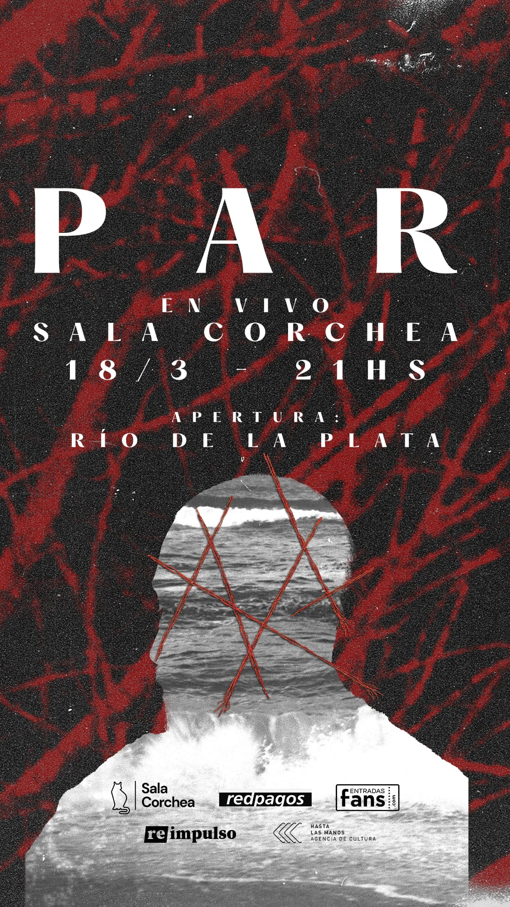

quienes somos
Victoria Solnik, montevideo, uruguay (1984) artista visual y curadora. Su obra explora los vínculos entre territorios y memorias a través de prácticas que combinan el registro visual, sonoro, archivo y performance.
Es coordinadora de curadurías del centro de fotografía de montevideo y ha trabajado en festivales como san josé foto (uy) y verzasca fotofest (sw).
Fue jurado de los premios sony (swpa 2025) (uk) y colabora como curadora en la plataforma vist. Acompaña procesos curatoriales para el diseño de exposiciones en montevideo.
Es co-fundadora del colectivo polenta para publicaciones fotográficas y es parte del photobook club de montevideo. Ha participado en residencias artísticas en la costa de la rambla sur de montevideo en un proyecto de registro audiovisual que también se despliega en la creación sonora.

Federico pignatta, florida, uruguay (1986) se dedica al diseño gráfico, investiga en artes visuales y experimentación sonora. Su práctica fusiona pensamiento conceptual con métodos experimentales y tecnologías emergentes.
Ha desarrollado talleres de arte especialmente dirigidos a comunidades en contexto de encierro, promoviendo procesos creativos inclusivos y participativos. Formó parte del colectivo atlántico negro (sintetizador), y como productor musical, destaca su colaboración con cedric myton (the congos).
Es fundador y director creativo de holomate, una plataforma web para la creación musical que incluye un controlador midi portátil, contribuyendo a ampliar las posibilidades de creación musical digital.

que hacemos
Desplegamos performances sonoras que exploran las resonancias, flujos y texturas acústicas de este cuerpo de agua. Mediante la cuidadosa intersección de registros de campo, procesamientos digitales y momentos de improvisación, originamos espacios de escucha alternativos para abordar las complejidades de la relación histórica y político-política con el entorno, revelando nuevas capas de significado en la experiencia sonora.

que es ruido de la plata
Investigación y experimentación sonora.
Ruido de la Plata articula un proceso de investigación artística que comprende el paisaje sonoro como territorio de conocimiento. A través de metodologías experimentales que combinan derivas urbanas, cartografías afectivas y tecnologías de escucha, el proyecto desarrolla un archivo sensible de las transformaciones territoriales y memoriales vinculadas a la rambla sur de Montevideo.

Esta práctica de investigación-creación establece diálogos entre cuerpo, agua y paisaje, entendiendo el sonido como una forma de conocimiento situado que revela las capas ocultas de la experiencia urbana. Los registros de campo, procesos de escucha profunda y performance electroacústica funcionan como herramientas de investigación que permiten acceder a dimensiones políticas, poéticas y afectivas del territorio.

El proyecto se materializa en conciertos, instalaciones y acciones site-specific que funcionan como dispositivos de transmisión de este conocimiento sonoro, invitando a experimentar formas alternativas de habitar y comprender la ciudad a través de la escucha activa y la reflexión crítica sobre nuestras relaciones con el entorno.


A 200 km
Antes del nombre Río de la Plata
pieza de drone y frecuencia sostenida
A 200 km, Antes del nombre Río de la Plata no habla del río, sino desde él.
Desde su tiempo profundo, desde su lógica de sedimentación, y desde su manera de transformar sin borrar.
El río también podría leerse como un archivo líquido: guarda, registra, acumula.
Cada época deja su resonancia.
Hace quince mil años, cuando el nivel del mar era más bajo, la costa se extema a cientos de kilómetros de la orilla que conocemos hoy. Mucho antes de llamarse Río de la Plata, avanzó lentamente hasta este lugar. Desde entonces convivimos con él, como si siempre hubiera estado aquí.
El sonido comienza antes de que el público llegue:
Varias ondas de ruido, se desplazan como las distintas corrientes.
Los instrumentos no ilustran el río. Son el río.
El shruti box sostiene un drone continuo: una corriente sonora que habita el paisaje, como el viento sobre el agua.
La cinta magnética guarda capas del río: recuerda, degrada, acumula, como el sedimento que conserva restos del tiempo.
Los sintetizadores analógicos abren otros drones en distintas frecuencias: movimientos de tono casi imperceptibles dentro de la corriente, como el flujo del agua entre piedras.
Entre estos planos, dos voces emergen en ese paisaje sonoro.
No narran: sedimentan.
Se superponen, se desfasan, se interrumpen.
Dentro del agua, la palabra se disuelve y se acerca a la frecuencia.
Y así permanecen abiertas las preguntas:
¿Qué nos dice el río?
¿A quién le habla?
¿Quién lo escucha?
radio del rio
rio vivo (idea que charlamos hoy con el cafecito)
contacto
hola@ruidodelaplata.uy
Contacto para colaboraciones o exhibiciones.